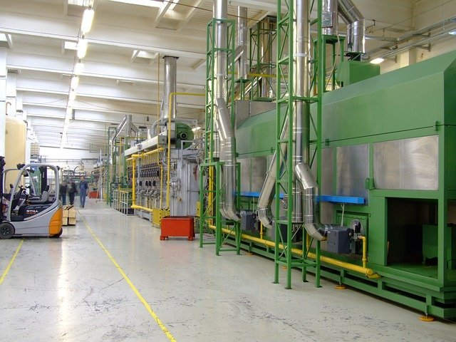

El mantenimiento, en otras palabras, consiste en la realización de una serie de actividades, como reparaciones y actualizaciones, que permiten que el paso del tiempo no afecte al rendimiento de un bien de capital, propiedad de la empresa. La realización de un correcto mantenimiento es necesario en todas las actividades económicas, además de que exige un serie de gastos por parte de la organización. El mantenimiento es necesario para evitar fallos en el proceso productivo que generen mayores costes. Por esa razón, como veremos más adelante, los productores pueden monitorear frecuentemente sus equipos para actuar antes de que se sucedan los desperfectos.
